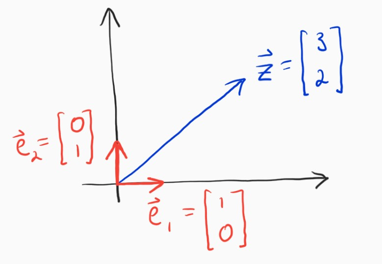
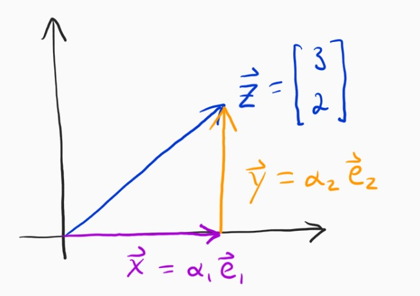
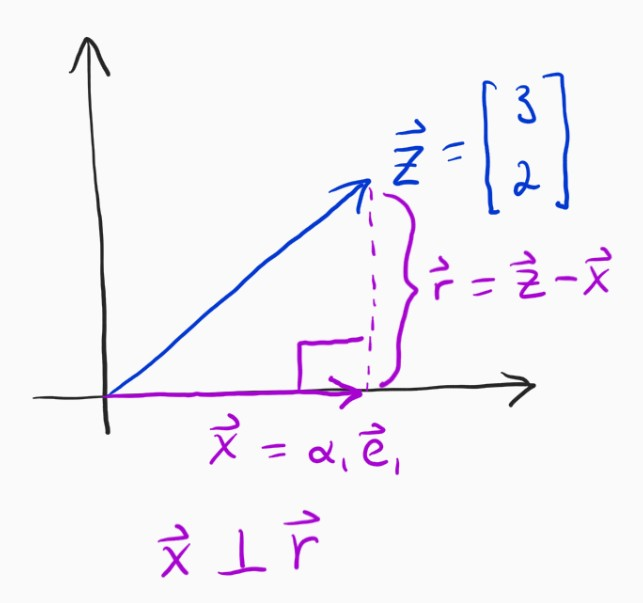
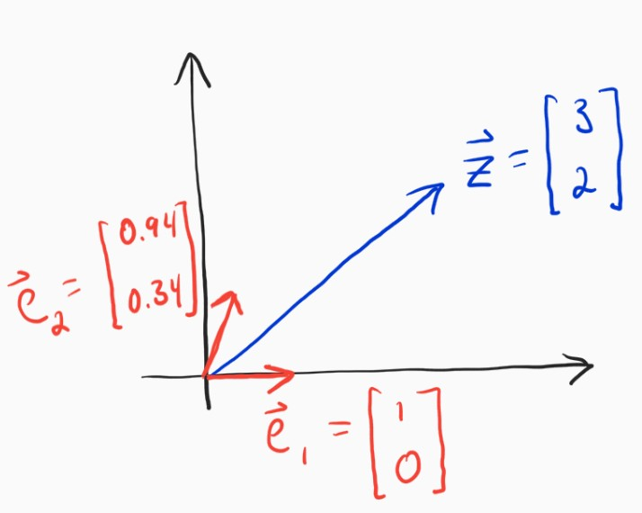
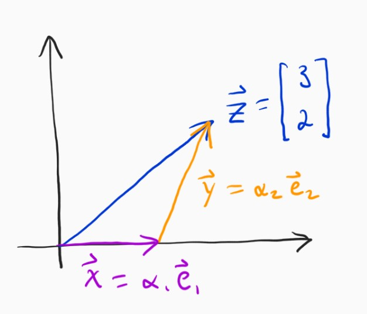
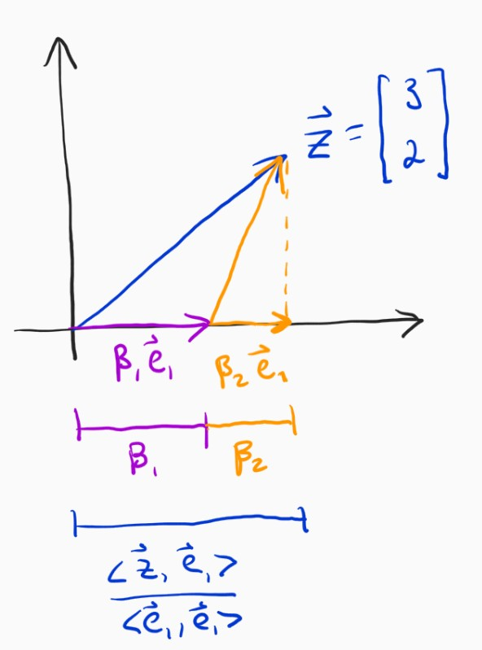
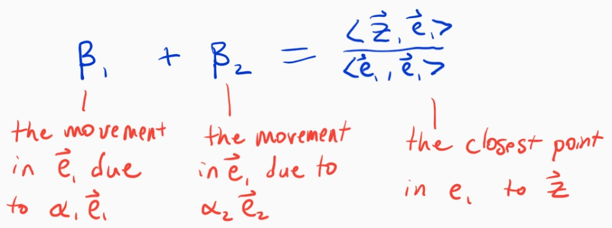

Finding the closest point in a subspace
Posted on Tue 13 February 2018 in posts
Linear regression is just the coolest. Now, I know what you're thinking: "uh, bro, do you even neural net?" First of all, of course I neural net, but secondly linear regression really is cool.
The reason linear regression is so cool is that if you can understand it deeply, I mean really deeply, then you will have a relatively easy time understanding the rest of machine learning maths. Today, I'm going to write about some ideas that are really much bigger than linear regression, but thinking about them in that context can be sometimes useful.
Today, I'm going to write about finding the closest point in a subspace, which will involve some really fun things with vectors, understanding the normal equation in a new light, and a really nice way to think about covariance. The exciting part is that we don't really need much prior understanding, preferably just some physics 1 level understanding of vectors.
Unit vectors¶
Have a look at the picture below.

If I were to ask you to write the vector $\mathbf{z}$ in terms of the unit vectors $\mathbf{e}_1$ and $\mathbf{e}_2$, you would very likely have no problems with it at all. Specifically, what are $\alpha_1$ and $\alpha_2$?
$$ \mathbf{z} = \alpha_1 \mathbf{e}_1 + \alpha_2 \mathbf{e}_2 $$
I'm sure this seems natural and obvious to most anyone who was introduced to vectors in school. The answer is $\alpha_1 = 3, \alpha_2 = 2$. The interesting thing is that you may not even realize, and surely didn't always realize, that determining those coefficients was a very simple and specific case of a much more general idea that has really deep and interesting implications. Let's break down what we just did.
The problem can be restated as, "can we get to $\mathbf{z}$ by traveling only in the directions of $\mathbf{e}_1$ and $\mathbf{e}_2$?"

So, we basically need to figure out how far to go in the $\mathbf{e}_1$ (x-axis) direction, and then do the same for the $\mathbf{e}_2$ (y-axis) direction. It seems so obvious in this case, it's just $3$ because the x-component of $\mathbf{z}$ is $3$, but we need to separate ourselves from thinking this way. How, exactly, did you know it was $3$? Well, we need to go to the point on the x-axis which is as close to $\mathbf{z}$ as we can possibly get if we were only allowed to go in the x-direction. It turns out that that point is where $\mathbf{x}$ and the error vector $\mathbf{e} = \mathbf{z} - \mathbf{x}$ are orthogonal.

This truth is called the orthogonality principle and you can prove that it is true with some really simple math, which I won't include here but please see these notes if you like.
If you can get behind this idea, then we can very easily build a framework for solving this problem that doesn't rely on intuition. The $\mathbf{x}$ vector in that image above needs to be orthogonal to $\mathbf{z} - \mathbf{x}$, which is really easy to state if you remember anything about dot products. At some point you learned that the dot product between two orthogonal vectors is identically zero, meaning that we have
$$ \langle \mathbf{x}, \mathbf{z} - \mathbf{x} \rangle = 0 $$
Since $\mathbf{x}$ is in the $\mathbf{e}_1$ direction, we know that $\mathbf{x} = \alpha_1 \mathbf{e}_1$, so we can say:
$$ \langle \alpha_1 \mathbf{e}_1, \mathbf{z} - \alpha_1 \mathbf{e}_1 \rangle = 0 \\ \alpha_1 \langle \mathbf{e}_1, \mathbf{z} \rangle - \alpha_1^2 \langle \mathbf{e}_1, \mathbf{e}_1 \rangle = 0 \\ \alpha_1 \langle \mathbf{e}_1, \mathbf{e}_1 \rangle = \langle \mathbf{e}_1, \mathbf{z} \rangle \\ \alpha_1 = \frac{\langle \mathbf{e}_1, \mathbf{z} \rangle}{\langle \mathbf{e}_1, \mathbf{e}_1 \rangle} $$
Quick aside¶
That last formula looks very similar for the vector projection formula. That basically says that if I want to project a vector $\mathbf{z}$ onto another vector $\mathbf{x}$, I'll wind up with:
$$ proj_{z, x} = \langle \mathbf{x}, \mathbf{z} \rangle \frac{\mathbf{x}}{\langle \mathbf{x}, \mathbf{x} \rangle}\\ = \frac{\langle \mathbf{x}, \mathbf{z} \rangle}{|\mathbf{x}|} \cdot \frac{\mathbf{x}}{|\mathbf{x}|} \\ = (\text{how much of z is in x}) \cdot (\text{unit vector in direction of x}) $$
With that in mind, the answer to "how far in a particular direction should we go?" is "the length of $\mathbf{z}$'s projection onto that direction." This is a very nice and intuitive result, I think. If we want to write a particular vector in terms of the sums of other vectors (and we often do), then we know exactly how far to go in the direction of each of those vectors. Applying that to this problem, we have:
$$ \alpha_1 = \frac{\langle \mathbf{e}_1, \mathbf{z} \rangle}{\langle \mathbf{e}_1, \mathbf{e}_1 \rangle} = \langle \mathbf{e}_1, \mathbf{z} \rangle = 3 \cdot 1 + 2 \cdot 0 = 3\\ \alpha_2 = \frac{\langle \mathbf{e}_2, \mathbf{z} \rangle}{\langle \mathbf{e}_2, \mathbf{e}_2 \rangle}= \langle \mathbf{e}_2, \mathbf{z} \rangle = 2 \cdot 0 + 2 \cdot 1 = 2 $$
Awesome, we are truly on our way, but next we'll make things a bit harder.
Non-orthogonal basis¶
The main reason the last problem was and is so easy is that the two vectors we wanted to write $\mathbf{z}$ in terms of (our basis vectors) were orthogonal. Let's choose a different set of basis vectors.

It is not so easy to determine $\alpha_1$ and $\alpha_2$ this time is it? The solution for this new set of basis vectors will look like the following.

The reason this is harder is that we cannot completely separate the computation of the two coefficients. Instead, when we move in the direction of $\mathbf{e}_2$ this time, we will also move a little bit in the direction of $\mathbf{e}_1$. Fear not, though, the solution is actually pretty straightforward.

The amount that we move in the x-axis direction is no longer just $\alpha_1$, it's $\beta_1 + \beta_2$, where $\beta_2$ is the amount we move in the $\mathbf{e}_1$ direction due to moving $\alpha_2$ in the $\mathbf{e}_2$ direction (similarly, for $\beta_1$). The good thing is that we know that we still need the total movement in the $\mathbf{e}_1$ direction to sum up to the length of the projection of $\mathbf{z}$ onto $\mathbf{e}_1$, just like before. Putting that into an equation gives the following.
$$ \beta_1 + \beta_2 = \frac{\langle \mathbf{e}_1, \mathbf{z} \rangle}{\langle \mathbf{e}_1, \mathbf{e}_1 \rangle} $$
We know that in total, we are going to move along two paths: $\alpha_1 \mathbf{e}_1$ and $\alpha_2 \mathbf{e}_2$. Consider the $\mathbf{e}_1$ direction. We want the amount we move in $\mathbf{e}_1$ due to $\alpha_1 \mathbf{e}_1$ plus the amount we move in $\mathbf{e}_1$ due to $\alpha_2 \mathbf{e}_2$ to equal the total amount we need to move in $\mathbf{e}_1$, which we know from above is to the point where the error vector is orthogonal.

The only real remaining problem is how to relate the $\alpha$s to the $\beta$s. The first question is self-evident: when we move $\alpha_1$ units in $\mathbf{e}_1$, how many units do we move in $\mathbf{e}_1$? That's right, since they are both the same direction, $\alpha_1 = \beta_1$. The second question is: when we move $\alpha_2$ units in $\mathbf{e}_2$, how many units do we move in $\mathbf{e}_1$? This turns out to be pretty easy, we just need to find out the projection of $\alpha_2 \mathbf{e}_2$ onto the $\mathbf{e}_1$ axis, which occurs when $\beta_2 \mathbf{e}_1 \perp \alpha_2 \mathbf{e}_2 - \beta_2 \mathbf{e}_1$. This is easy to solve for, and we end up with:
$$ \beta_2 = \alpha_2 \frac{\langle \mathbf{e}_1, \mathbf{e}_2 \rangle}{\langle \mathbf{e}_1, \mathbf{e}_1 \rangle} $$
We can now write this all out into a single equation.
$$ \alpha_1 \frac{\langle \mathbf{e}_1, \mathbf{e}_1 \rangle}{\langle \mathbf{e}_1, \mathbf{e}_1 \rangle} + \alpha_2 \frac{\langle \mathbf{e}_1, \mathbf{e}_2 \rangle}{\langle \mathbf{e}_1, \mathbf{e}_1 \rangle} = \frac{\langle \mathbf{e}_1, \mathbf{z} \rangle}{\langle \mathbf{e}_1, \mathbf{e}_1 \rangle} $$
We now have an equation that puts constraints on the coefficients that we're interested in. If we do this for every direction, we'll have a linear system of equations that we can solve for to get the $\alpha$s. Let's do that.
A general formula for the closest point in a subspace¶
The system of two equations and two unknowns that derive from the methods used above are:
$$ \alpha_1 \frac{\langle \mathbf{e}_1, \mathbf{e}_1 \rangle}{\langle \mathbf{e}_1, \mathbf{e}_1 \rangle} + \alpha_2 \frac{\langle \mathbf{e}_1, \mathbf{e}_2 \rangle}{\langle \mathbf{e}_1, \mathbf{e}_1 \rangle} = \frac{\langle \mathbf{e}_1, \mathbf{z} \rangle}{\langle \mathbf{e}_1, \mathbf{e}_1 \rangle}\\ \alpha_1 \frac{\langle \mathbf{e}_2, \mathbf{e}_1 \rangle}{\langle \mathbf{e}_2, \mathbf{e}_2 \rangle} + \alpha_2 \frac{\langle \mathbf{e}_2, \mathbf{e}_2 \rangle}{\langle \mathbf{e}_2, \mathbf{e}_2 \rangle} = \frac{\langle \mathbf{e}_2, \mathbf{z} \rangle}{\langle \mathbf{e}_2, \mathbf{e}_2 \rangle} $$
This can be simplified, and further, stated in matrix form.
$$ \begin{bmatrix} \langle \mathbf{e}_1, \mathbf{e}_1 \rangle & \langle \mathbf{e}_1, \mathbf{e}_2 \rangle \\ \langle \mathbf{e}_2, \mathbf{e}_1 \rangle & \langle \mathbf{e}_2, \mathbf{e}_2 \rangle \end{bmatrix} \begin{bmatrix} \alpha_1 \\ \alpha_2 \end{bmatrix} = \begin{bmatrix} \langle \mathbf{z}, \mathbf{e}_1 \rangle \\ \langle \mathbf{z}, \mathbf{e}_2 \rangle \end{bmatrix} $$
This is starting to look nice and concise and, more importantly, like it will generalize. In fact, you can find the closest point to a vector $\mathbf{z}$ within the subspace spanned by any set of $K$ basis vectors simply by using this equation. This is immensely useful! How and why, you might ask. Let's just start with linear regression, which is useful, no matter what the cool deep learning kids say.
Linear regression is finding the closest point in a subspace¶
Though there are, like, infinity ways to look at linear regression, one very simple one is to think of it as finding the closest point to the label vector $\mathbf{y}$ in the space spanned by the feature vectors $\{\mathbf{x}_0, \ldots, \mathbf{x}_d\}$, or the columns of the data matrix $X$.
$$ \begin{bmatrix} \\ \\ & X & \\ \\ \\ \end{bmatrix} \begin{bmatrix} \\ \mathbf{\beta} \\ \\ \end{bmatrix} = \begin{bmatrix} \\ \\ \mathbf{y} \\ \\ \\ \end{bmatrix}\\ \begin{bmatrix} \\ \mathbf{x}_1\\ \\ \end{bmatrix} \beta_1 + \begin{bmatrix} \\ \mathbf{x}_2\\ \\ \end{bmatrix} \beta_2 + \ldots + \begin{bmatrix} \\ \mathbf{x}_d\\ \\ \end{bmatrix} \beta_d = \begin{bmatrix} \\ \\ \mathbf{y} \\ \\ \\ \end{bmatrix}\\ $$
We need to get as close as we can to $\mathbf{y}$, by moving only in the directions of the column vectors $\mathbf{x}_i$. Hmmmm, we've done this before!
$$ \begin{bmatrix} \langle \mathbf{x}_1, \mathbf{x}_1 \rangle & \ldots & \langle \mathbf{x}_1, \mathbf{x}_d \rangle \\ \vdots & \ddots & \vdots \\ \langle \mathbf{x}_d, \mathbf{x}_1 \rangle & \ldots & \langle \mathbf{x}_d, \mathbf{x}_d \rangle \end{bmatrix} \begin{bmatrix} \beta_1 \\ \vdots \\ \beta_d \end{bmatrix} = \begin{bmatrix} \langle \mathbf{y}, \mathbf{x}_1 \rangle \\ \vdots \\ \langle \mathbf{y}, \mathbf{x}_d \rangle \end{bmatrix} $$
The set of equations above is exactly the same as the normal equations that are used to solve linear regression, i.e. $X^TX \beta = X^T \mathbf{y}$.
This super simple application of a concept we've already mastered just helped us solve linear regression. It turns out that the closest point in a subspace can be extended to solve tons of other problems, and sometimes (many times?) we can use actual basis functions instead of basis vectors like we did here. And because the ideas are the same, it will end up being really simple to understand.
A tangent on covariance¶
The covariance matrix, for whatever reason has always tripped me up. As a data scientist, it just feels like I should be able to spit out something really insightful as to why the solution to linear regression involves the inverse of the covariance matrix. "Uh well, it has to do with, uh, how all the features relate to one another and, something." Really aced it, didn't I?
Ok, well equipped with the deep understanding we gained above, hopefully we can say something insightful. Remember, we need to figure out, for a given dimension, how far to go in that dimension, provided that movement in every dimension can affect all other dimensions. In linear regression, we use the covariance matrix as a means to translate movement in one dimension into the equivalent movement in another dimension. That's pretty much it. For some reason the whole "covariance of x and y is a measure of how much x is above its mean when y is above its mean" explanation never clicks for me on an intuitive level, but the idea of translating movement from one direction to another does. Go figure.
Going beyond¶
What we've achieved here is no small feat, as we now have a general way to compute the closest approximation to a given vector, provided a set of basis vectors. It turns out, that we can get even more general, and apply these concepts not just to vectors (where vector is just a list of numbers), but to functions as well. The exact same machinery we developed here can help us find the closest approximation to a given function, provided a set of basis functions. If that sounds exciting, it is. And once you have that down, you essentially already understand things like kernel regression, Gaussian processes, and support vector machines more fundamentally than most.